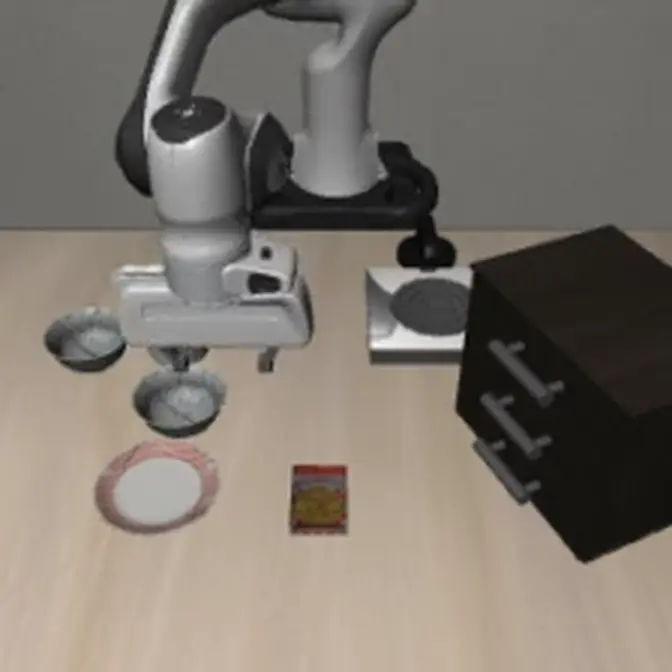

LIBERO Object
50 pairs25/50baseline49/50aligned+48 pp
VLA timing checks · Panda simulation
检查动作块延迟，并记录仿真中的修复与回退结果。 Checks action-chunk latency and records repair and fallback behavior in simulation.
画面来自 Panda 的 MuJoCo 测试。下方 π0.5-LIBERO 实验与这条路径相互独立，尚未端到端连接。 This is a Panda MuJoCo test. The π0.5-LIBERO experiment below is separate and is not connected end to end.
第一组比较观测年龄对齐前后，第二组扩展到三个 LIBERO 任务集，第三组 RTC 对照没有显示优势。仓库保留了结果文件、统计脚本和检查命令。The first compares execution with and without observation-age alignment, the second covers three more LIBERO suites, and the RTC control shows no advantage. Result files, statistical scripts, and check commands are kept in the repository.
两组使用同一个官方 π0.5-LIBERO checkpoint，不训练、不微调，共比较 120 组匹配初始状态。Both groups use the same official π0.5-LIBERO checkpoint with no training or fine-tuning, across 120 matched initial states.
视频不可用，请打开对应结果文件。Video unavailable. Open the corresponding result files.
视频不可用，请打开对应结果文件。Video unavailable. Open the corresponding result files.
这是从 32 个 aligned-only win 中选出的 1 组定性案例；汇总成功率使用全部 120 组配对。任务：拾取盘子和小烤盅之间的黑碗，并放到盘子上。共享时间轴保留原片时长：aligned 在 7 秒成功后停留末帧，baseline 继续至 22 秒。Curated qualitative pair, 1 of 32 aligned-only wins; aggregate rates use all 120 pairs. Task: pick up the black bowl between the plate and the ramekin and place it on the plate. The aligned clip succeeds at 7 s and holds its final frame while baseline continues to 22 s.
打开本组结果文件Open result files for this runObject、Goal 与 LIBERO-10 使用同一套预先确定的实验设置。三个任务集的 exact test 在 Holm 校正后仍有显著差异。Object, Goal, and LIBERO-10 use the same predefined setup. The exact test for each suite remains significant after Holm correction.
汇总行仅作描述，不计算 pooled p-value。完整行级数据和 Holm 校正写在 RESULTS.md。The pooled row is descriptive; no pooled p-value is computed. Full rows and Holm correction are in RESULTS.md.
打开跨任务集结果包Open cross-suite result packageCorrected-v3 重新创建每个环境，并用 query-0 哈希检查配对。Hard projection 与 RTC guidance 没有相对 baseline 的任务成功率优势。Corrected-v3 recreated each environment and gated pairing on query-zero hashes. Hard projection and RTC guidance show no task-success superiority over baseline.
协议把推理耗时折算为已流逝的 50 ms controller ticks。当前 evaluator 采用阻塞式推理，并在响应后模拟 catch-up，不是并发控制。调度器随后跳过过期前缀，只执行五步有效窗口。The protocol converts inference time into elapsed 50 ms controller ticks. This evaluator uses blocking inference and simulates catch-up after the response; it is not concurrent control. The scheduler then selects a valid five-action window.
超过 250 ms，或剩余动作不足五步时，程序保持当前状态并请求新动作。浏览器只展示这条固定规则，不运行模型推理。Past 250 ms, or with fewer than five actions remaining, the program holds and requests a new action. The browser only demonstrates this fixed rule; it does not run inference.
两条路径复用响应检查、延迟处理、日志和结果脚本，但动作空间与仿真环境不同，因此结果分别报告。They reuse response checks, latency handling, logging, and result scripts. Their action spaces and simulators differ, so their results are reported separately.

OpenPI 调用官方 checkpoint 与 transforms。Spatial 实验采用成对的 0/40/80/160 ms 响应抖动与显式 flow sampling noise；跨任务集实验使用固定 200 ms 延迟。OpenPI serves the official checkpoint and transforms. Spatial uses paired 0/40/80/160 ms response jitter with explicit flow sampling noise; the cross-suite experiment uses a fixed 200 ms delay.
视频不可用，请打开 MuJoCo 结果文件。Video unavailable. Open the MuJoCo result files.
SIMULATIONMuJoCo / clearance_slow / 20 mm / 80 ms / 0.5 kg / 1×
MuJoCo 测试覆盖 RRT-Connect / RRT*、时间参数化、限力矩关节 PD、动作约束、碰撞采样和脚本化故障响应。LQR 只保留在独立的 NumPy/DH 基线与测试中。MuJoCo tests cover RRT-Connect / RRT*, time parameterization, torque-limited joint PD, action constraints, collision sampling, and scripted fault responses. LQR remains only in the separate NumPy/DH baseline and tests.
这些模块用于检查动作格式、修复离线轨迹、处理过期命令，并保存可重复检查的结果。它们没有增加模型能力，也没有在真实机器人上测试。These modules check action formats, repair saved trajectories, handle stale commands, and save results that can be checked again. They do not add model capability and have not been tested on a real robot.
统一记录 provider 身份、动作顺序、坐标系、归一化和观测绑定，并在输入不一致时拒绝执行。OpenVLA-OFT 这里只用了合成接口样例，没有运行 checkpoint。The adapter records provider identity, action ordering, coordinate frames, normalization, and observation binding, and rejects inconsistent input. OpenVLA-OFT is represented only by a synthetic interface fixture; no checkpoint was run.
查看接口说明与检查器Open interface notes and checker把受保护的 Panda 命令映射为 LeRobot 风格的 in-memory frame，并重放 watchdog 的过期保持、故障锁存和显式 reset。Guarded Panda commands are mapped to LeRobot-style in-memory frames, then the watchdog's stale hold, fault latch, and explicit reset are replayed.
查看 episode replayInspect episode replay对已保存的 π0.5 响应执行有界缩放搜索，并检查速度、加速度、关节限位、碰撞边和终端制动路径。A bounded scale search runs on saved π0.5 responses and checks velocity, acceleration, joint limits, collision edges, and terminal braking.
查看 270 个样例Open the 270-case report根据 clearance 细分每条关节空间边，并与更密的参考采样对照。测试只覆盖静态障碍，不包含连续自碰或真机安全。Each joint-space edge is subdivided from its clearance and compared with denser reference sampling. The test covers static obstacles only, not continuous self-collision or hardware safety.
查看碰撞采样说明Open collision-sampling notes一个 MuJoCo 测试循环连接双相机采集、阻塞式脚本 policy、观测年龄调度、制动修复和力矩控制，并注入 jitter、丢响应、负载与动作故障。braking 模式 9 例中只有 1 例到达目标。One MuJoCo test loop connects dual-camera capture, a blocking scripted policy, age-aware dispatch, braking repair, and torque control, with injected jitter, response loss, payload, and action faults. Braking reaches the target in only 1 of 9 cases.
查看异步测试表Open asynchronous test table结果文件使用固定序列化、SHA-256、分阶段 watchdog 检查和行索引，便于定位原始记录并重新运行统计脚本。Result files use fixed serialization, SHA-256, staged watchdog checks, and row indexes so the original records can be located and the statistical scripts rerun.
查看结果文件索引Open result-file indexNO LEARNED POLICY / NO π0.5 INFERENCE这些用例记录仿真中的检测、回退和停止行为，只测试程序逻辑，不代表 VLA 安全性。These cases record detection, fallback, and stop behavior in simulation. They test program logic and do not establish VLA safety.
remaining horizon / deadline
latch hold after the late chunk
two frame hashes unchanged
reject before policy inference
response validation contract
zero validated remote chunks
sampled collision predicate
guarded hold with intervention
下面的命令检查实验文件、重新计算统计量并生成离线图表。它们不会重新运行模型推理或训练。The commands below check experiment files, recompute statistics, and generate offline plots. They do not rerun model inference or training.
python scripts/build_evidence_catalog.py --check.\scripts\measured_age_confirmatory_acceptance.cmd.\scripts\rtc_primary_acceptance.cmd